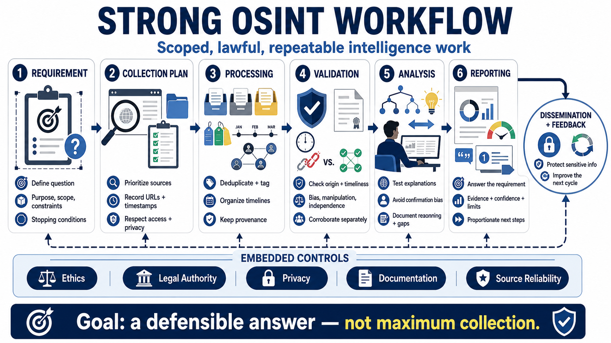

Course Summary and Key Takeaways
Connecting to LMS... Progress: in progress

Narration
A strong OSINT workflow begins with a defined question and ends with useful intelligence for an authorized audience. The requirement establishes purpose, scope, constraints, and stopping conditions. The collection plan turns those boundaries into prioritized source activities.
Collection records URLs, timestamps, context, and approved preservation artifacts while respecting access controls and privacy. Processing deduplicates, tags, organizes timelines, and maps relationships without losing provenance. Facts, claims, assumptions, and judgments remain visibly separate.
Validation examines origin, timeliness, bias, manipulation, and source independence. Corroboration relies on genuinely separate evidence, not repeated copies of one claim. Analysis tests competing explanations, identifies gaps, avoids confirmation bias, and documents reasoning.
Reporting answers the requirement with evidence references, calibrated confidence, limitations, and proportionate next steps. Dissemination protects sensitive information, and feedback improves the next cycle.
Ethics, legal authority, privacy, documentation, and source reliability are not optional extras. They are controls embedded throughout the workflow. The goal is not maximum collection; it is a defensible answer produced through scoped, lawful, repeatable, and responsible intelligence work.